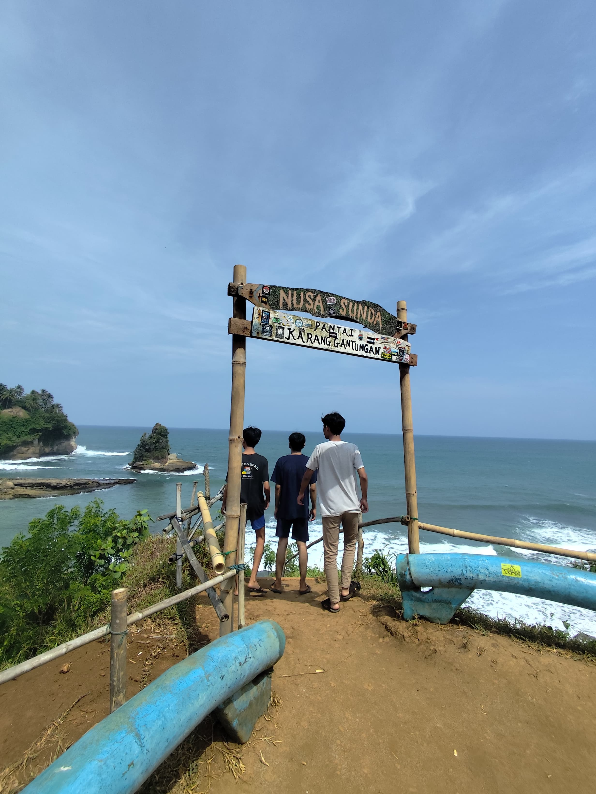
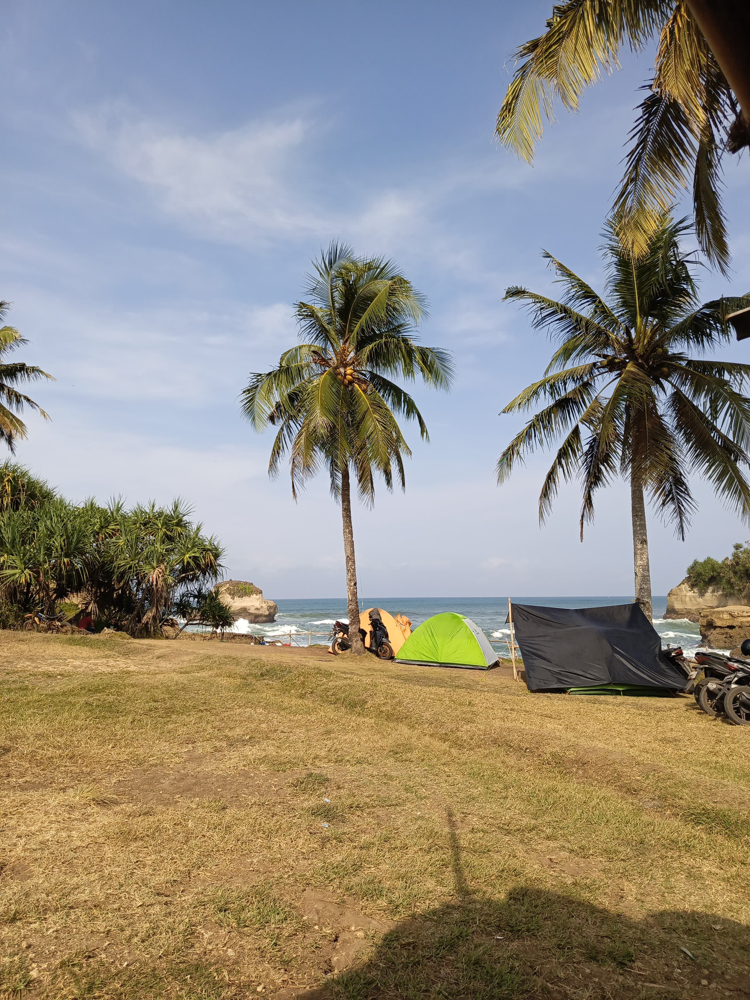
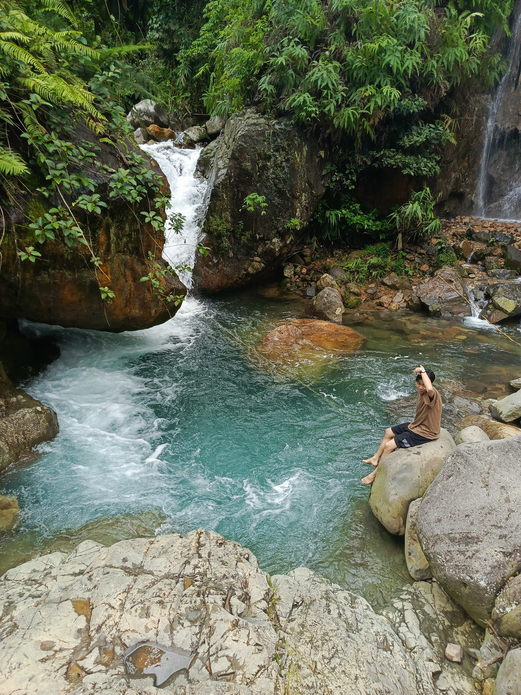

Ini adalah bagian isi atau konten dari website sederhana ini.
Profil
Nama saya Zaqhluul Farhan, seorang mahasiswa Teknik Informatika di Universitas Pamulang.
Saya memiliki ketertarikan dalam dunia pemrograman, desain web, dan teknologi cloud computing.
Saya senang belajar hal baru dan sedang aktif mengembangkan beberapa proyek sederhana menggunakan HTML, CSS, dan JavaScript.
Pembuatan
Ini adalah proyek website yang dibuat menggunakan HTML dan CSS.
Website ini menampilkan struktur dasar seperti header, konten utama, dan footer.
Saya juga belajar menggunakan Flexbox untuk membuat tampilan responsif,
serta menambahkan efek animasi agar lebih menarik saat digunakan di berbagai perangkat, termasuk di HP.
Jalan-Jalan ke Tempat Favorit



Salah satu hobi saya adalah jalan-jalan. Foto-foto di atas adalah momen ketika saya mengunjungi pantai yang indah,
mendaki gunung bersama teman, dan berkeliling kota untuk menikmati suasana.
Jalan-jalan membuat saya lebih semangat dan bisa menyegarkan pikiran di tengah kesibukan kuliah.